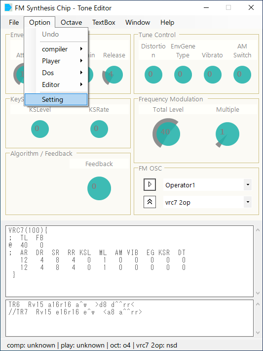
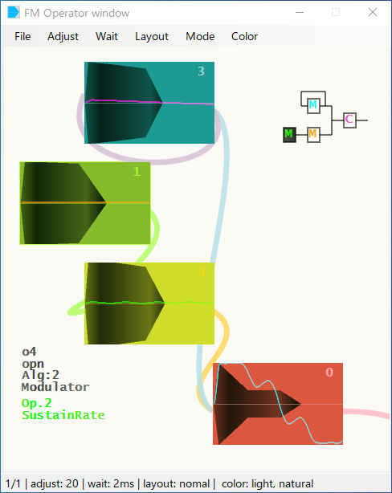

-- PMDのケースで説明します。--
※ Preset音色の準備
PMD98用 Preset FM音色セットである、 |
|  |
fm_editor.exeを起動します。 本体パネルの"Option - Setting"を選択します。 |
環境設定パネルから、 "binaryタブ"にある"ラジオボタン"でPMDを選択、 "MC.EXE"を"リストボックス"へDrug&Dropで登録します。 同じく、"playerタブ"を選択し、 "FMPMD.exe"を登録します。 (mml_watch.exeで、パス登録してある場合は、クリック選択のみ行います。) |

|
"dosタブ"を選択し、 "msdos.exe"を登録します。 PMDは16bit appなので、"x64対応"にチェックを入れ、 "msdos.exe"経由で起動するようにします。 OKボタンを押し、環境設定を閉じます。 |
本体パネルのメニューにある、"File - Preset"を選択し、Preset波形ウィンドウを開きます。 "pc88タブ"を選択します。 "File - Preset reload"で、Presetデータを読み込みます。 |
"リストボックス"内の"@003"などをクリック、これで音が出れば、環境設定がうまくいっています。 続けて、"Import"ボタンを押すと、本体にpresetデータが読み込まれます。 |
|  |
本体パネルのメニューにある、 "window - FM OP window"をクリックすると、 FM Operator windowが開きます。 インポートしたエンベロープと波形が表示されます。 |
本体パネルの、"Frequency Modulation"にある、"Total Levelの ノブを、上下にドラックすることで、FM Operator windowの表示が変化します。 この音色を確認するときは、"▽再生ボタン"(or Spaceキー, Enterキー)を押します。 |
| home> index> quick> FM Synthesis Chip - Tone Editor |
04coreworks
|